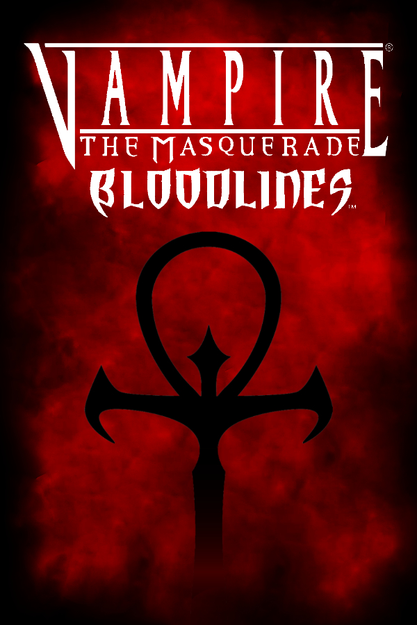

 |
|
| Tiempo de juego | 1m 58s |
| Última actividad | 30/12/2025 20:54:31 |
| Añadido | 17/11/2025 18:45:44 |
| Modificado | 2/12/2025 23:24:49 |
| Estado de finalización | Jugado |
| Librería | Playnite |
| Fuente | |
| Plataforma | PC (Windows) |
| Fecha de lanzamiento | 16/11/2004 |
| Puntuación de la Comunidad | 86 |
| Puntuación de la Crítica | 72 |
| Puntuación de usuario | |
| Género | Role-playing (RPG) |
| Desarrollador | Troika Games |
| Editor | Activision Electronic Arts |
| Característica | Single Player |
| Enlaces | Steam GOG |
| Tag | |
Pocos juegos tienen una historia de resurrección como esta. Lanzado al muere en 2004 —roto, incompleto y a la sombra de un gigante—, "Bloodlines" tenía un alma tan brillante que la comunidad de fanáticos se negó a dejarlo morir. La versión que jugamos hoy es el resultado de ese amor: una obra reconstruida y pulida durante más de una década por la comunidad, la visión completa y restaurada de lo que sus creadores quisieron hacer.
El juego te tira de cabeza a las noches de Los Ángeles de principios de los 2000. No la de Hollywood, sino una versión "gótico-punk" oscura y sucia, llena de clubes nocturnos, callejones peligrosos y sociedades secretas de vampiros. La atmósfera, ahora libre de los bugs que te sacaban de la inmersión, es más densa y palpable que nunca.
La magia del juego es la libertad de rol, y el parche de la comunidad la expande. La elección de tu clan de vampiros sigue siendo la decisión más importante, cambiando diálogos, misiones y la forma de interactuar con el mundo. ¿Jugar como un Nosferatu deforme que se esconde en las alcantarillas o como un Malkavian demente con profecías en sus delirios? Cada partida es un viaje distinto, ahora con misiones y opciones que habían sido cortadas y que fueron restauradas.
Esta versión curada por los fans pule las asperezas del original. El combate es más funcional, las misiones que estaban rotas ahora se pueden completar, y se restauraron líneas de diálogo y finales alternativos que se habían quedado en el tintero. Es, en esencia, el "Director's Cut" que el estudio nunca pudo lanzar.
Jugar "Bloodlines" hoy es una experiencia de rol inmersiva como pocas. Es una clase magistral de cómo escribir personajes memorables y construir un mundo que se siente vivo y peligroso. Gracias al trabajo monumental de sus fans, es un juego que superó sus problemas de nacimiento para convertirse en la leyenda que siempre debió ser.
• Unofficial Patch + Traducción
• HD Overhaul
• Audio Remaster